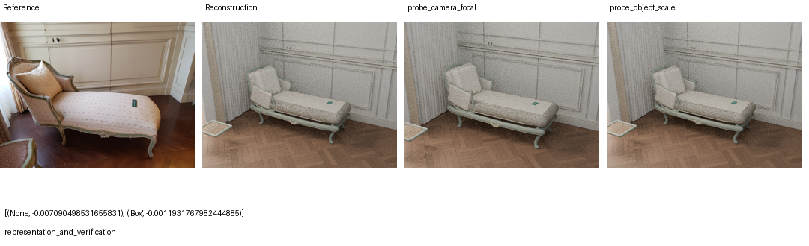
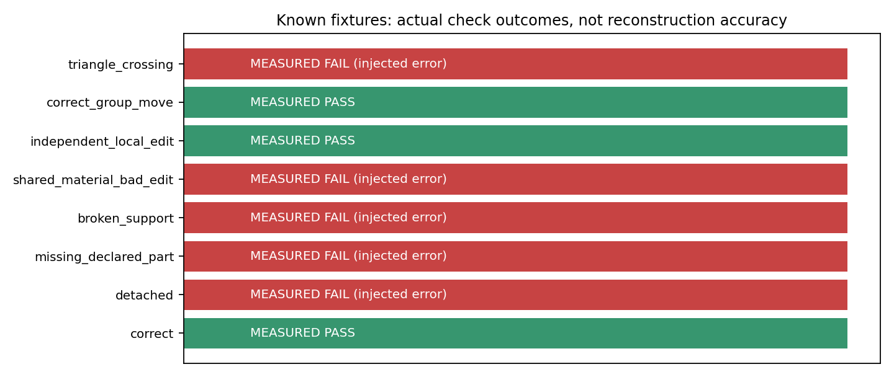
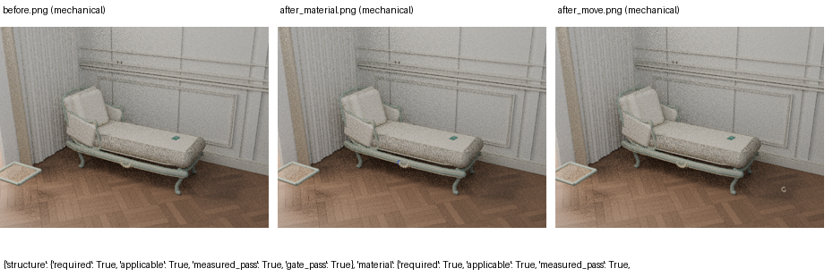
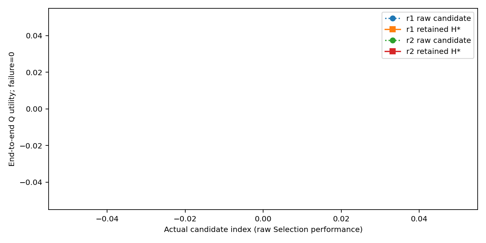
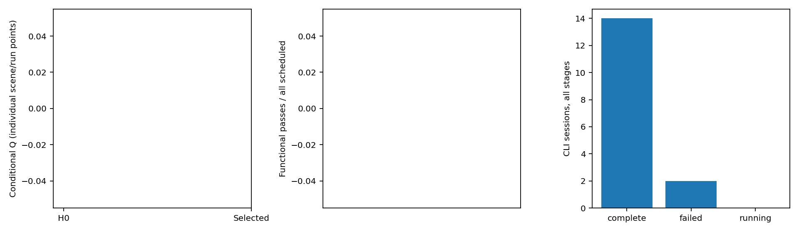

Exploratory；两次独立研发；不将机制运行等同于科研结论。
中文报告 · 原始汇总{
"state": {
"phase": "running_scene",
"method": "fixed_h0",
"run_id": "r1",
"candidate_id": "H0",
"scene_id": "commons_129095630",
"split": "development",
"folder": "__EXPERIMENT_ROOT__/results/r1/fixed_h0/H0/development/commons_129095630"
},
"summary": [
{
"run_id": "r1",
"method": "fixed_h0",
"scheduled": 6,
"recorded": 0,
"completed": 0,
"execution_success_rate": 0.0,
"conditional_Q": null,
"task_utility_v2": null,
"functional_passes": 0,
"failed": 0,
"not_run": 6
},
{
"run_id": "r1",
"method": "scene_rsi_v2",
"scheduled": 6,
"recorded": 0,
"completed": 0,
"execution_success_rate": 0.0,
"conditional_Q": null,
"task_utility_v2": null,
"functional_passes": 0,
"failed": 0,
"not_run": 6
},
{
"run_id": "r2",
"method": "fixed_h0",
"scheduled": 6,
"recorded": 0,
"completed": 0,
"execution_success_rate": 0.0,
"conditional_Q": null,
"task_utility_v2": null,
"functional_passes": 0,
"failed": 0,
"not_run": 6
},
{
"run_id": "r2",
"method": "scene_rsi_v2",
"scheduled": 6,
"recorded": 0,
"completed": 0,
"execution_success_rate": 0.0,
"conditional_Q": null,
"task_utility_v2": null,
"functional_passes": 0,
"failed": 0,
"not_run": 6
}
],
"ledger": {
"cli_sessions": 16,
"initial_sandbox_failures": 0,
"observable_cli_turns": 16,
"observable_model_rounds": null,
"tool_calls": 0,
"known_input_tokens": 397248,
"known_output_tokens": 59391,
"usage_unknown_sessions": 2,
"render_attempts_upper_bound": 19,
"renders_completed": 12,
"device": "CPU+GPU",
"device_mapping_record_counts": {
"CPU": 12,
"GPU": 2
},
"max_cli_sessions": 420,
"max_render_frames": 1500
}
}





{
"trace": "candidates/smoke/scene_rsi_v2/C1/stage2.json",
"scene": "commons_109923183",
"decision": {
"shared_module": "representation_and_verification",
"decision": "No meaningful improvement from tested perturbations; revise object coverage and verification rather than assert a unique scale/camera cause",
"best_probe": {
"scene_id": "commons_109923183",
"object_id": "Box",
"hypothesis": "Generated dominant object scale may explain part of the visual mismatch; camera held fixed",
"probe": "object_scale"
},
"observed_deltas": [
-0.007090498531655831,
-0.0011931767982444885
],
"regression_failures": [],
"observation_count": 2,
"unmeasured_regressions": [],
"instruction": "Modify reusable H and/or executable two-stage M. Explain how actual observations motivated the change. Preserve fixed final functional gates. Sensitivity is not unique causal identification.",
"scope": "Cross-image reconstruction; no scene IDs, paths or per-image parameter tables",
"candidate_type_allowed": [
"H-only",
"M-only",
"H+M"
]
},
"probes": [
{
"request": {
"scene_id": "commons_109923183",
"object_id": null,
"hypothesis": "Framing may be sensitive to focal length; geometry held fixed",
"probe": "camera_focal"
},
"execution": {
"probe": "camera_focal",
"target_selection": {
"object": null,
"mesh_names": [],
"group_name": null
},
"interpretation": "Controlled observation, not proof of causal attribution or true 3D accuracy",
"focal_length_before": 49.0,
"focal_length_after": 53.900001525878906,
"geometry_unchanged": true,
"status": "completed",
"images": [
"probe_camera_focal.png"
],
"render_attempts": 1
},
"visual_metrics": {
"valid": true,
"ssim": 0.19497894302246918,
"lpips": 0.8672244548797607,
"dino": 0.5371708273887634,
"psnr": 13.05406497438019,
"overall": 0.3654466339456967
},
"quality_delta": -0.007090498531655831,
"interpretation": "Controlled sensitivity, not unique causal attribution"
},
{
"request": {
"scene_id": "commons_109923183",
"object_id": "Box",
"hypothesis": "Generated dominant object scale may explain part of the visual mismatch; camera held fixed",
"probe": "object_scale"
},
"execution": {
"probe": "object_scale",
"target_selection": {
"object": "Box",
"mesh_names": [
"Box"
],
"group_name": null
},
"interpretation": "Controlled observation, not proof of causal attribution or true 3D accuracy",
"scale_before": [
12.0,
12.0,
0.11999999731779099
],
"scale_after": [
13.200000762939453,
13.200000762939453,
0.13199999928474426
],
"scale_factor": 1.1,
"pivot_world_scene_units": [
0.0,
0.0,
-0.07999999821186066
],
"pivot_rule": "Target geometry AABB center; avoids moving geometry center when SceneAct group origin is world zero",
"fixed_camera": true,
"non_target_preserved": true,
"status": "completed",
"images": [
"probe_object_scale.png"
],
"render_attempts": 1
},
"visual_metrics": {
"valid": true,
"ssim": 0.20252086306622422,
"lpips": 0.875221848487854,
"dino": 0.5734657049179077,
"psnr": 12.844961305111122,
"overall": 0.37134395567910805
},
"quality_delta": -0.0011931767982444885,
"interpretation": "Controlled sensitivity, not unique causal attribution"
}
],
"diff": "candidates/smoke/scene_rsi_v2/C1/changes.diff",
"phase": "smoke_excluded_from_formal"
}